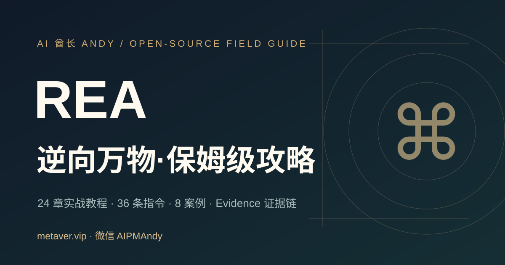

REA 逆向万物 · 保姆级中文实战指南
从 Mac + Codex 安装到 Evidence 证据链、JavaScript/Electron、Web、Native、Android 等授权逆向工程。独立中文教程，不属于 REA 官方项目。
作者：AI 酋长 Andy · 微信 AIPMAndy · 官网 https://metaver.vip/ · AI / 职业服务

官网（发布后）：https://aipmandy.github.io/rea-guide-cn/（在 Pages 部署成功前不应声称可访问）
目标 GitHub 仓库（尚需创建）：AIPMAndy/rea-guide-cn；官方工具仓库：https://github.com/morluto/rea。
这份教程有什么
- 38 章完整内容：安装、Agent/MCP、CLI、JS、Electron、Native、.NET、Android、Evidence、安全与重建。
- 64 条可复制任务指令：用于 Codex/Claude Code/Cursor，默认先取证、再审批、再运行。
- 12 个分级案例：1 个原创可执行 Node 样例，2 个上游官方演示，其余明确是教学实验计划。
- 30 天训练计划 与 12 项红队自检，浏览器本地保存进度。
- 原创静态网站：无需服务器和付费 API，GitHub Pages 即可发布。
一分钟理解 REA
REA 是面向 coding agent 的逆向工程编排工具，通过 MCP/CLI 连接静态与动态分析能力；不能一键还原开发者原始源码，也不能取代 Hopper / Ghidra / IDA 的商业或独立许可。
官方： rea.tools · morluto/rea
Mac + Codex 安装路线
node --version
npm --version
npx rea-agents@latest setup
# 审阅将修改的 Agent 配置及备份，批准后重启 Codex
npx -y rea-agents@latest doctor --json
Node 版本门槛核查于 2026-10-21：Node 22.19+、24.11+ 或 26+（具体以你实际安装的 REA 版本为准）。完整 Mac 安装指南。
静态 JS 试验：
cd examples/mini-app
node test.mjs
# 之后使用 REA 官方静态分析命令，对该目录绝对路径做分析
38 章全目录
- 01｜认识 REA 与边界
- 02｜Mac 从零安装
- 03｜Windows 与 Linux
- 04｜Codex / Claude / Cursor 接入
- 05｜首个十分钟逆向任务
- 06｜REA CLI 常用命令
- 07｜Evidence 证据链
- 08｜JavaScript / Electron 逆向
- 09｜网页与运行观察
- 10｜原生程序与反编译器
- 11｜Windows Calculator 百分号案例
- 12｜Chrome 小恐龙加速规则案例
- 13｜Android APK 静态分析
- 14｜.NET 程序分析
- 15｜Go / Rust / WASM / ELF
- 16｜SQLite、JSON 与本地数据
- 17｜网络抓包和动态行为
- 18｜提示词设计与反证
- 19｜从观察到重建
- 20｜安装故障排除
- 21｜更新、迁移与卸载
- 22｜许可、隐私与负责任使用
- 23｜发布 Evidence 与社区协作
- 24｜一人开发者逆向工作流
V5 专项内容与可阅读网站
不再只有摘要弹窗：每一章都可通过 pages/guides/XX-*.html 完整阅读；文档、案例、模板全部有静态 HTML 页面，支持手机浏览，不需依赖 Markdown 渲染服务。
- 38 章：新增桌面包、Go/Rust、GPU、GGUF/safetensors、IL2CPP、Godot、WASM、EVM、ADB、Flutter、固件、网络与崩溃记录、PyInstaller、受控进程捕获。
- 64 条可复制指令：每条都包含授权范围、证据和反证。
- 12 个案例入口：新增模型文件的原创合成样例及未实测研究方案；来源证据分级明确。
- 28 类 REA 官方能力覆盖矩阵：与上游 README 对照，明确官方发布与当前 npm 可用不是一回事。
- 72 个完整 HTML 阅读页（内容维护阶段，文件数随贡献扩展），并公开 Benchmark 协议、证据等级、功能覆盖。
新增章节：
- 25｜桌面安装目录的构成与分析入口
- 26｜Go / Rust 产物元数据与供应链线索
- 27｜GPU 二进制、PTX 与设备兼容性
- 28｜GGUF / safetensors 模型文件检查
- 29｜Unity IL2CPP 元数据安全检查
- 30｜Godot PCK 资源结构与可复现导出
- 31｜WASM 模块导入导出与 ABI 理解
- 32｜EVM 字节码只读结构调查
- 33｜Android ADB 与设备取证范围
- 34｜Flutter / Dart APK 构建来源观察
- 35｜固件镜像清单与安全抽取
- 36｜HAR / PCAP / 崩溃记录取证
- 37｜PyInstaller Python 打包程序静态识别
- 38｜受控进程运行与 Evidence 对照实验
项目质量与安全
python3 -m unittest discover -s tests -v
node examples/mini-app/test.mjs
python3 -m http.server 8000
这份教程的本地单元测试只验证本站及原创示例，不能证明作者已经在你的机器上真实运行 REA。官方案例按其原始出处引用；请勿将教学计划包装成已复现客户案例。
协议与贡献
- 原创网站、原创 JS 示例代码：MIT License（见 LICENSE）。
- 教程文字：CC BY 4.0（见 LICENSE-DOCS.md）。
- 第三方代码、软件、Logo、截图保留原有权利与许可证；不对它们二次授权。
欢迎用 PR 提交真实匿名化实验记录，必须给出环境、工具版本、来源、反证和授权边界。另见 CONTRIBUTING.md。
微信 AIPMAndy ｜ https://metaver.vip/ ｜ https://metaver.vip/services
免费开源教程，可持续提交实测与反证。微信：AIPMAndy